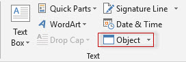
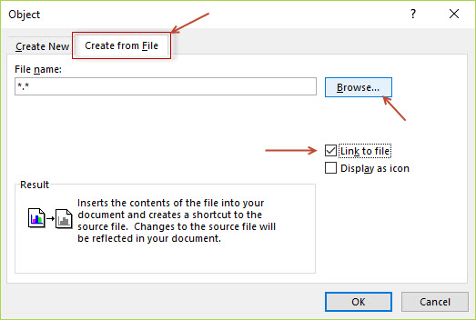
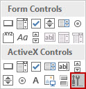
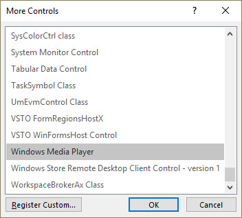
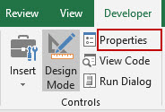
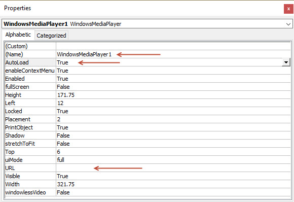
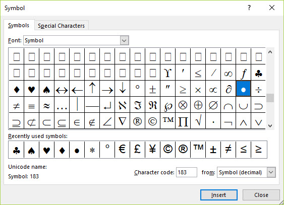
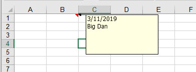
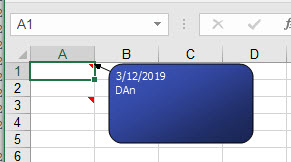
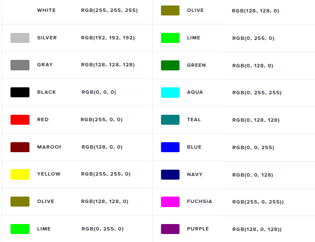

- Formula's
- Functions
- Key Board Short Cuts
Send email from Excel
Sub Mail_Sheet_Outlook_Body()
'For Tips see: http://www.rondebruin.nl/win/winmail/Outlook/tips.htm
'Don't forget to copy the function RangetoHTML in the module.
'Working in Excel 2000-2016
Dim rng As Range
Dim OutApp As Object
Dim OutMail As Object
Dim wsL, wsP As Worksheet
Set wsL = Worksheets("List")
Set wsP = Worksheets("PreEmail")
Dim name As Variant
'name = [Q1] 'this is the cliets email addrss font color in this cell is white
name = Application.WorksheetFunction.VLookup(wsP.[A2], wsL.Range("A:E"), 3, False)
With Application
.EnableEvents = False
.ScreenUpdating = False
End With
Set rng = Nothing
Set rng = ActiveSheet.UsedRange
'You can also use a sheet name
'Set rng = Sheets("YourSheet").UsedRange
Set OutApp = CreateObject("Outlook.Application")
Set OutMail = OutApp.CreateItem(0)
On Error Resume Next
With OutMail
.To = name
.CC = ""
.BCC = "ocskininthebuff@hotmail.com"
.Subject = "OC SKIN IN THE BUFF"
.HTMLBody = RangetoHTML(rng)
.Send 'or use .Display
End With
On Error GoTo 0
With Application
.EnableEvents = True
.ScreenUpdating = True
End With
Set OutMail = Nothing
Set OutApp = Nothing
End Sub
Function RangetoHTML(rng As Range)
' Changed by Ron de Bruin 28-Oct-2006
' Working in Office 2000-2016
Dim fso As Object
Dim ts As Object
Dim TempFile As String
Dim TempWB As Workbook
TempFile = Environ$("temp") & "\" & Format(Now, "dd-mm-yy h-mm-ss") & ".htm"
'Copy the range and create a new workbook to past the data in
rng.Copy
Set TempWB = Workbooks.Add(1)
With TempWB.Sheets(1)
.Cells(1).PasteSpecial Paste:=8
.Cells(1).PasteSpecial xlPasteValues, , False, False
.Cells(1).PasteSpecial xlPasteFormats, , False, False
.Cells(1).Select
Application.CutCopyMode = False
On Error Resume Next
.DrawingObjects.Visible = True
.DrawingObjects.Delete
On Error GoTo 0
End With
'Publish the sheet to a htm file
With TempWB.PublishObjects.Add( _
SourceType:=xlSourceRange, _
Filename:=TempFile, _
Sheet:=TempWB.Sheets(1).name, _
Source:=TempWB.Sheets(1).UsedRange.Address, _
HtmlType:=xlHtmlStatic)
.Publish (True)
End With
'Read all data from the htm file into RangetoHTML
Set fso = CreateObject("Scripting.FileSystemObject")
Set ts = fso.GetFile(TempFile).OpenAsTextStream(1, -2)
RangetoHTML = ts.readall
ts.Close
RangetoHTML = Replace(RangetoHTML, "align=center x:publishsource=", _
"align=left x:publishsource=")
'Close TempWB
TempWB.Close savechanges:=False
'Delete the htm file we used in this function
Kill TempFile
Set ts = Nothing
Set fso = Nothing
Set TempWB = Nothing
End Function
Embedding a table in excel to a word doc. Update the table from excel to word.
- Create a table in excel. The table should be the only thing on the sheet. Hide guideline as well.
- Save and Close the excel workbook
- Open Word
- From the insert tab click on Text section click: Object..

- Click "Create from File" > Click "Link to file" > Click Browse...

- Browse to the excel file and click OK. The table is now in word.
- Go back to excel and add new data to the table. Save and close excel.
- Go back to Word. Right click anywhere in the table and choose "Update Link" The table will be updated with the new data added in excel.
Environ
Getting Username, special folders and more using the Environ function
Web site for Environ function, with examples.
Using Environ to get user name / logon ID
menu environ to get user name The name (logon ID) of the user that is currently logged on.
Environ("USERNAME ")
example result: johndoe
Sub owner()
- Dim owner As String
owner = Environ("username")
MsgBox owner
End Sub ' this will result in the computers username
example: Dim TempFile As String
TempFile = Environ$("temp") & "/" & Format(Now, "dd-mm-yy h-mm-ss") & ".htm"
How to add a video to a Excel worksheet.
Start on the Developer tab.
- Click Design Mode
- Click Insert and the tool icon 
- Scroll down to Windows Media Player 
- This will give you the + sign to draw the size of the player in the worksheet
- Now click properties 
- Add File or URL to play in the player. You can also set autoplay placement and more.

How to share Excel and allow others to edit file online
- Owner of file uploads file to Microsoft OneDrive.
- Owner then opens file from Microsoft OneDrive.
- Owner then clicks share and sends email('s) to people whom he wants to share with.
- Email Recipiant's open file from the email they received. Then they can click edit from browser to edit file. File is auto saved, there is no save button.
- Once file has been completed, it can be downloaded by all to there computer if necessary.
- Everyone will see changes being made by others.
- Macro's will not work online, however all macros will be intact if a person downloads the file to there local machine. One problem with this is that the macro button will not be seen however if there is a keystroke equivalent the macro will work. After down load you can still add a button and then assign to the macro if you choose to do so.
Cells Speak
Right click on the quick reference bar and choose "More Commands". Choose "Commands not in the ribbon" "Speak Cell on Enter".
To make a cell talk using a macro:
Sub hello()
- Range("A1").Speak 'What ever is in cell A1 will be spoken
end sub
Sub direct_speech()
- Application.Speech.Speak "Hello world" ' This will say what is written in quotes .... Use this in a macro to make it talk
Application.Speech.Speak (Range("B12")) ' This will say what is in the specified cell address
' MsgBox "Any messsage you want to display here"
End Sub
Make Sound on Error
Follow this link
Sub test_color()
MsgBox ActiveCell.Interior.Color
End Sub
- Sub colorchange()
If Range("A1").Interior.Color = RGB(55, 86, 35) Then ActiveCell.Offset(0, 1).Select
End Sub
How to add a Bullet Point
Goto the insert Tab. Then Symbols or shortcut =
(Alt + N +U)

Add a Comment to the Activecell using VBA
Sub AdComment()
Dim X As String
Dim d As Date
X = InputBox("Enter Comment")
d = Date
ActiveCell.AddComment
ActiveCell.Comment.Visible = False
ActiveCell.Comment.Text Text:=d & vbNewLine & X
End Sub

Add a Comment Plus Font Color, Bold, Text Size
Sub adcomment()
Dim X As String
Dim d As Variant
X = InputBox("Enter Your Comment")
d = Date
ActiveCell.AddComment
ActiveCell.comment.Visible = False
ActiveCell.comment.Text Text:=d & vbNewLine & X
With ActiveCell.comment.Shape.TextFrame.Characters.Font
- .ColorIndex = 0 ' This is the Text Color
.Size = 8
.Name = "Bell MT"
'.Name = "Arial Black" ' Change the font to whatever you like
.Bold = True
.Italic = True
End With
End Sub
Here is another example from Chandoo

This will change all comments on the page. But will not affect new comments added after the macro is run.
Sub Comments_Fun()
Dim MyComments As Comment
'Dim LArea As Long ' This is not needed but was in Chandoo's code so I will leave it there commented out.
For Each MyComments In ActiveSheet.Comments
With MyComments
- .Shape.AutoShapeType = msoShapeRoundedRectangle ' Change this using the Ctrl + Spacebar and choose shape.
.Shape.TextFrame.Characters.Font.Name = "Tahoma"
.Shape.TextFrame.Characters.Font.Size = 8
.Shape.TextFrame.Characters.Font.ColorIndex = 2
.Shape.Line.ForeColor.RGB = RGB(0, 0, 0)
.Shape.Line.BackColor.RGB = RGB(255, 255, 255)
.Shape.Fill.Visible = msoTrue
.Shape.Fill.ForeColor.RGB = RGB(58, 82, 184) ' Change to brown (128, 0, 0) or any RGB color
.Shape.Fill.OneColorGradient msoGradientDiagonalUp, 1, 0.23
End With
Next 'comment
End Sub
Link to Microsoft Color Index
Link to Microsoft Color Index with examples
Control the Zoom on the page
Sub zoom()
ActiveWindow.zoom = 100
End Sub
How to read the filenames of all the files in a directory into an array
For instance, in order to populate a list box
Article contributed by Dave Rado
You can use the Dir$ function to do this. (Dir and Dir$ are functionally identical, but Dir$ runs marginally faster).
Dir$ is a lot faster than using FileSearch, unless many subdirectories need to be searched or you need to use the advanced features of FileSearch such as the LastModified property.
Dim MyFile As String
Dim Counter As Long
'Create a dynamic array variable, and then declare its initial size
Dim DirectoryListArray() As String
ReDim DirectoryListArray(1000)
'Loop through all the files in the directory by using Dir$ function
MyFile = Dir$("c:\temp\*.*")
Do While MyFile <> ""
DirectoryListArray(Counter) = MyFile
MyFile = Dir$
Counter = Counter + 1
Loop
'Reset the size of the array without losing its values by using Redim Preserve
Redim Preserve DirectoryListArray(Counter - 1)
To prove it worked you could run the following:
For Counter = 0 To UBound(DirectoryListArray)
'Debug.Print writes the results to the Immediate window (press Ctrl + G to view it)'
Debug.Print DirectoryListArray(Counter)
Next Counter
To populate a Listbox from the array you could use:
ListBox1.List = DirectoryListArray
Standard RGB Colors

Remove the Windows Login Screen
Search for: NETPLWIZ
Uncheck: Users must enter a user name and password.
Click apply and reboot system.